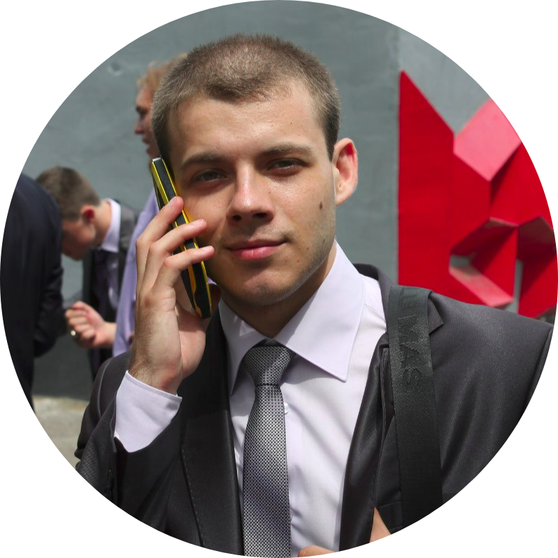

Осуществлял рефакторинг кода
Разворот Frontend и Backend проекта одной командой в консоли.
Языки: Ruby, Go, Elixir, JavaScript, TypeScript
Технологии: Docker, Kubernetes.
Июль 2022 – Август 2024
Должность: Ruby Developer (проект "Умный Дом")
Обязанности: Сопровождал существующие микросервисы (на Ruby on Rails с использованием Kafka, Dry-rb стека в связке с CQS-архитектурой, Roda; Использование gRPC, HTTP для межсервисной коммуникации); участвовал в создании микросервиса "Промокоды".
Достижения: Разрабатывал новую бизнес-функциональность в сервисах проекта "Умный дом" (Ruby on Rails). Реализовал функциональность логирования запросов между микросервисом и интеграцией, с помощью Apache Kafka и ElasticSearch, с последующим отображением в Админ-панели. Реализовал функционал удобной и настраиваемой гибкой проверки (HealthCheck) подов в Kubernetes, через probes, в виде подключаемой библиотеки (gem). Занимался оптимизацией RSpec тестов и устранением плавающих тестов
Декабрь 2020 – Июль 2022
Должность: Ruby Developer
Обязанности: Участвовал в Backend-разработке. Разрабатывал новый функционал: расширял LMS API с помощью фреймворков Grape и Rails, выделял одинаковый функционал в монады (с помощью Dry-Monads), устранял недочёты (Bug Fixing). Тестировал функционал. Участвовал в Code Review коллег.
Достижения: Написание системы формирования docx-файла, определённого шаблона, который насыщен Liquid-переменными. Написание системы сборки письма из частей, которые находятся в базе, насыщая письмо Liquid-переменными. Усовершенствование системы поиска обьектов в базе, посредством гема Ransack ("поиск в глубину моделей"). Генерация XLSX-файла на основе динамического входного Json-а (разложение информации в плоский вид). Исправление бага, когда при загрузке видео на сервер, - видео не загружалось и не конвертировалось в более мелкие форматы.
Август 2020 – декабрь 2020
Должность: Backend Developer
Обязанности: Участвовал в Backend - разработке. Разрабатывал новый функционал: выделял Админ-панель в отдельное приложение, выполненное на основе библиотеки ActiveAdmin; создал API с нуля на основе Rails и GraphQL; устранял недочёты (Bug Fixing). Тестировал функционал. Осуществлял самостоятельный deploy на Stage и Production - среды. Участвовал в Code Review коллег. Осуществлял самостоятельную настройку и поднятие Stage и Production-серверов на основе Dokku.
Достижения: Коммерчески успешное создание платформы для тренировки перед ОГЭ и ЕГЭ, с нуля до финальной эксплуатации на Production. Backend реализован на GraphQL с использованием функционала отложенных задач, с полным выделением админ-панели в отдельное приложение. Отдельные части приложения также выделены в отдельные приложения.
Октябрь 2019 – август 2020
Должность: Junior Ruby on Rails Developer
Обязанности: Участвовал в разработке высоконагруженных сервисов для Абсолют-банка (использование фреймворков Rails и Grape, а также Trailblazer (Operations)), а также поддерживал их и развивал. Решал интеграционные задач. Тестировал разрабатываемый код. Участвовал в разработке админ-панели подсчёта кредитных заявок для банка ТКБ.
Достижения: Создание функционала для саппорт-отдела Абсолют-банка (поиск кредитной заявки через систему поисковых сервисов, а также её кастомизация). Вынесение логики в отдельную административную панель, для удобства корректирования данных.
Повышение тестового покрытия на 16% для Абсолют-банка (кодовая база проекта: свыше 50К строк).
Август 2017 – Ноябрь 2018
Должность: Инженер отдела сервисной поддержки (ОСП)
Обязанности: Оказывал сервисные услуги на объектах заказчиков, касаемо систем АСДУЭ, АСТУЭ, АСКУЭ. Контролировал и поддерживал системы в актуальном состоянии. Устранял замечания от Заказчика. Ежедневно отслеживал состояние системы. Обслуживал и поддерживал SCADA-системы на Пякяхинском м/р в актуальном состоянии. Обслуживал, настраивал, поддерживал ПЛК, счётчики э/э, электрические преобразователи производства ООО «НПО Мир». Сервис систем телемеханики, устранение неисправностей с оборудованием, ведение деловых переговоров лично с заказчиком.
Достижения: Наладка, монтаж, программирование ПЛК на 11 обьектах (участки нефтезавода и нефтяные кусты) месторождения и их последующий вывод на АРМы.
Факультет: "Нефтегазовая и Строительная Техника (НСТ)"
Специальность: "Автоматизация нефтегазовой и строительной техники и технологий" (Бакалавриат)
Квалификация: Инженер-автоматчик (диплом с отличием)
Специальность: "Наземные транспортно-технологические комплексы" (Магистратура)
Квалификация: Инженер (магистр) (диплом с отличием)
2018 — 2019
Получен Сертификат
2021
Получен Сертификат
И.В. Симдянов. Самоучитель Ruby.
Фултон Хэл. Путь Ruby.
Михалис Цукалос. Golang для профи.
Марейн Хавербеке. Выразительный JavaScript.
Адитья Бхаргава. Грокаем алгоритмы.
Алекс Сюй. System Design. Подготовка к сложному собеседованию.